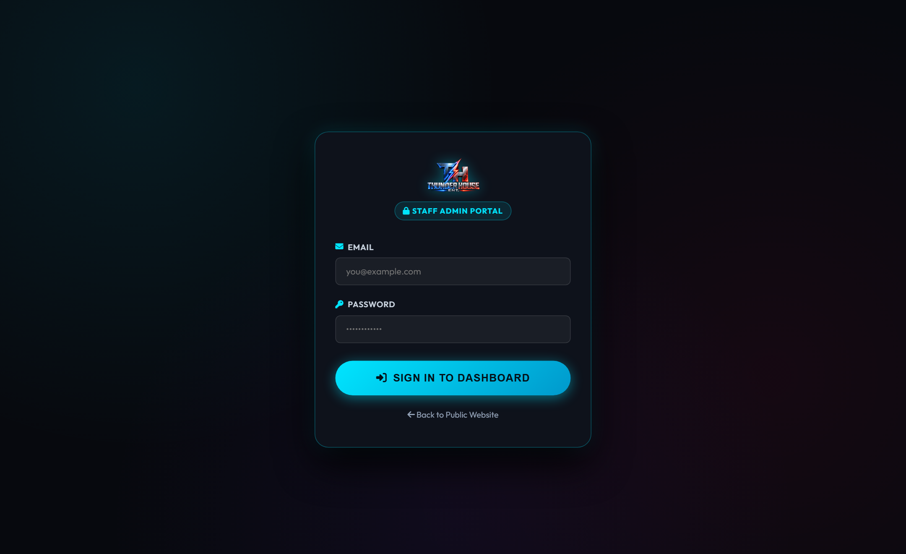

Sales Pipeline, DJ Consultations & Client CRM
Every booking begins with a human conversation. This chapter details our intake Kanban board, how to conduct professional client consultations, and how client records are maintained inside our CRM.
1. The Leads Pipeline Kanban Board
Inquiries received from the website flow directly into our visual pipeline at admin/leads.html. Each inquiry card is classified into one of 6 lifecycle stages:

admin/leads.html. Staff can drag cards between columns or click to inspect client notes, phone numbers, and package preferences.
- New Inquiries: Brand-new web submissions waiting for initial staff outreach. Staff must contact new inquiries within 2 hours during standard business hours.
- Contacted: Initial phone call, text, or email consultation scheduled.
- Quoted: Formal price estimate and event proposal dispatched to the client.
- On Hold: The client has submitted their intake form and their calendar date is temporarily locked under the 72-hour protection window.
- Booked: The $200 retainer deposit is paid and the digital contract is fully executed.
- Lost / Archived: Inquiries where the date was unavailable, the client chose another vendor, or the 72-hour hold expired without communication.
2. The DJ Consultation Suite
Located at admin/consultations.html, this specialized tool guides our DJs through structured phone, video, or in-person consultations with prospective clients.

Under Settings > Automation Rules, the system maintains a safety toggle called DJ Consultation Auto-Send:
- When OFF (Default / Recommended): When a staff DJ completes an intake questionnaire, the quote is marked as "Pending Superuser Review". The owner verifies package pricing and availability before sending the formal proposal to the client.
- When ON: Experienced staff DJs can submit quotes directly to the client's inbox immediately upon ending the consultation call.
3. The Clients CRM
Located at admin/clients.html, the CRM acts as our long-term memory for every person, corporate planner, or family that hires Thunder House ENT.

Why Long-Term CRM Records Matter:
- Milestone Anniversaries: A wedding client today becomes an anniversary party or baby shower client tomorrow. Keeping detailed notes enables personalized annual outreach.
- Corporate Rebookings: Companies host annual holiday banquets and summer employee appreciation picnics. The CRM logs their typical budget, venue contacts, and music preferences so rebooking takes only minutes.